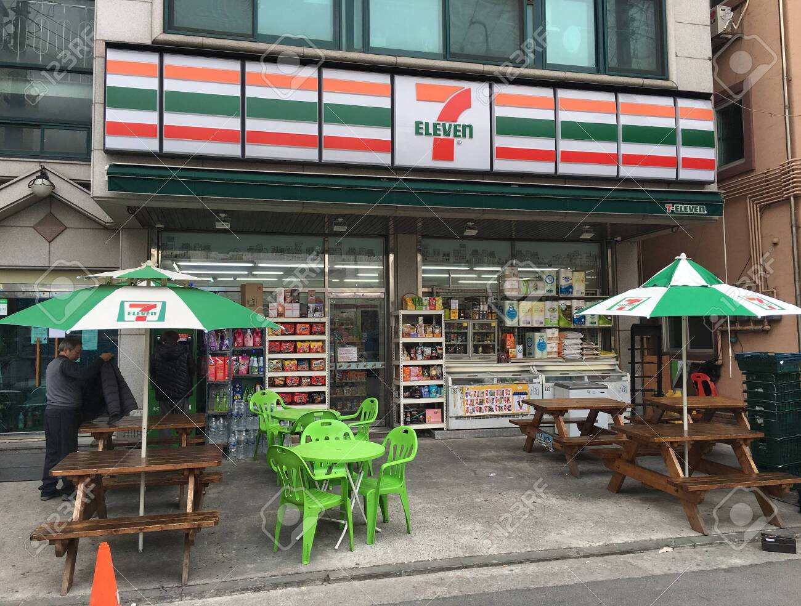

7 SEVENA
간판의 구조와 배색을 참고하고 로고·상호는 변형했습니다. 본체에는 앞쪽 소품이 없으며, 별도 백과 에셋을 배치 규칙으로 조립합니다. 상층 창문은 포함하지 않습니다.
모델을 불러오는 중입니다.
백과 제작본
외관 레퍼런스

배치 결과
출입 통로를 비우기 위해 녹색 좌석군은 사진보다 오른쪽에 배치했습니다. 실내는 업종에 따른 예시이며 치수는 사진 비례로 추정했습니다. 그림체는 단색 면과 단순한 패턴으로 유지합니다.
조립 미리보기용 1종입니다. 에셋 백과 통합본이며 실제 동네 자동 배치는 미연결입니다.